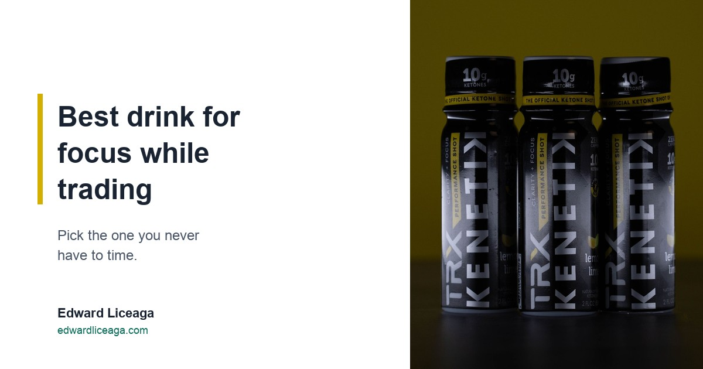

Best Drink for Focus While Trading: Pick the One You Never Have to Time
The market sets the hours. What is in your cup should not need a schedule of its own.

I trade NQ futures and NDX options every session. Live, with my own capital. The screen decides when I need to be paying attention, and it does not check with me first.
That makes the drink on the desk a small decision with more weight than it looks. This piece is about how I would pick one. It is not medical advice and it is not trading advice. Nothing in a cup changes your results. Sizing and process do that.
Disclosure up front: I sell a caffeine free ketone drink, Kenetik, through a referral link and earn a commission when someone buys through it. It comes up near the end. Read that part with the commission in mind.
The session sets the clock
Most routines assume you choose your hours. Trading does not work that way. The open and the data releases ask for your attention at a time you did not pick.
Coffee comes with a schedule of its own. When to drink it, how many cups, how late is too late. The FDA lists a 12 ounce cup of regular brewed coffee anywhere from 113 to 247 milligrams of caffeine, so even the dose is a guess unless you know exactly what went into the cup.
Put those two schedules on the same desk and you are managing one more variable during a session. I already have enough of those.
Run it through the questions you ask of a position
Underwriting a business and sizing a position come down to the same three questions. What is the realistic downside, how much of it can I survive, and what am I being paid to take it. I wrote about that in Why I Still Trade Every Session. They work on a desk drink too.
What is the realistic downside? For caffeine, the honest answer is timing. A cup taken for an afternoon session is still partly in your system at bedtime. I went through that arithmetic in The Coffee You Drank at 3 PM Is Still Working at Midnight. If tomorrow's session starts early, tonight's sleep is part of the trade.
How much can you carry? The FDA has cited 400 milligrams a day for most adults as an amount not generally associated with negative effects, about two to three 12 ounce cups. It also says people differ a lot in how sensitive they are. That is a ceiling the agency published. Your number may be lower, and only you can find it.
What are you getting for it? If the cup is habit, very little. If it is the one thing that gets you to the screen on time, maybe a lot. Write down which it is before you change anything.
Discipline is a system
If your process depends on feeling strong that particular morning, you do not have a process. I believe that about trading, and it applies to whatever you drink at the desk.
So the test I would use is simple: would I drink the same thing, at the same time, on a losing day? If the answer is no, the routine is tied to the tape, and it will be gone the week you need it most. Pick one drink for the session, drink it at the same point every day, and note it next to your trades. After a few weeks you have something to look at besides how you felt.
Keep it boring. The routine is only useful if it does not change with your P&L.
Count what you already drink
Before swapping anything, log a normal week: every caffeinated drink, the size, and the time, next to your session hours. Most people find one cup that exists only because it is 2 PM. I laid out a four week version of this in How to Cut Back on Caffeine.
Decaf is one option for that slot. The FDA says decaf typically has 2 to 15 milligrams in an 8 ounce cup, which is far less than regular coffee and still more than zero.
What I keep at the desk
In my afternoon slot I drink Kenetik, which has zero caffeine, so there is nothing to time. The can is 12 grams of ketones, 60 calories, and zero sugar. The TRX shot in the photo above is a 2 ounce bottle with 10 grams of ketones plus electrolytes, also caffeine free and sugar free. It is Informed Sport certified and the official ketone shot of TRX.
There is no stimulant in it, so do not expect it to feel like coffee. Ketones are a fuel your brain already knows how to use, and the drink supports clarity, focus, and cognitive endurance. That is the whole claim. It will not pick your entries, and it will not save a trade sized too big.
You do not need my drink for any of this. Water at the same time every session passes the losing day test just as well. The log and the routine matter more than anything you buy. If you want to know where a ketone drink fits in a day, Best Time of Day to Drink Ketones covers the timing.
Caffeine free, sugar free. My link if you want to try it: https://drinkkenetik.com/EDDIEG
Promo code: EDDIEG
I earn a commission on purchases through this link. This article is consumer information and is not medical, financial, or trading advice. Trading futures and options involves substantial risk of loss. Caffeine figures and guidance quoted from "Spilling the Beans: How Much Caffeine Is Too Much?", fda.gov (content current as of August 28, 2024), checked October 26, 2026.